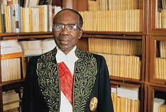
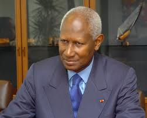
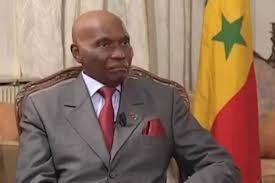
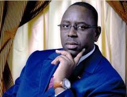

Le Sénégal se situe à l'avancée la plus occidentale du continent africain dans l'Océan Atlantique, au confluent de l'Europe, de l'Afrique et des Amériques, et à un carrefour de grandes routes maritimes et aériennes. D'une superficie de 196 722 km2, il est limité au nord par la Mauritanie, à l'est par le Mali, au sud par la Guinée et la Guinée Bissau, à l'ouest par la Gambie, et par l'Océan Atlantique sur une façade de 500 km.


L'histoire du Sénégal précolonial est surtout caractérisée par l'existence de royaumes ou d'états qui furent progressivement morcelés,
notamment par la traite négriére au XVIII siècle.
Les peuplements se sont progressivement consolidés pour aboutir à la création des premiers royaumes qui se forment au VIIe siècle, les Toucouleurs fondent le Tekrour, le Royaume du Namandirou, puis le Djolof, avec de lointaines parentés avec l'empire du Ghana. Parmi les différents royaumes, le plus puissant au XIVe siècle était l'empire du Djolof qui regroupait le Cayor, le Baol, les royaumes sérères du Sine et du Saloum, le Waalo, le Fouta-Toro et le Bambouk. Au sud du pays, l'État du Kaabu, puis le Fouladou.
La conquête coloniale commence dès la découverte de ces terres en 1442 par le navigateur vénitien Cadamosto pour le compte du Portugal. Les Portugais se lancent alors rapidement dans la traite des Noirs, mais devront bientôt faire face à la concurrence des négriers britanniques, français et hollandais à travers le Commerce triangulaire. Les Hollandais fondent un comptoir sur l'île de Gorée, la France établit en 1659 celui de Saint-Louis qui deviendra la première capitale du Sénégal. En 1677, les Français occupent à leur tour l'île de Gorée (un des principaux centres du commerce des esclaves avec Saint-Louis et le fort de l'île James en Gambie).
La seconde République de 1848 crée un mandat de député pour Saint Louis. L'ordre colonial s'impose avec Faidherbe,
gouverneur du Sénégal de 1854 à 1861 et de 1863 à 1865, qui jette les bases de la future Afrique-Occidentale française AOF .
Respectueux des coutumes indigènes, il étend l'influence française très au-delà du Sénégal, travaille à développer l'économie locale
et créé le port de Dakar. La troisième République accorde le statut des quatre communes à Saint-Louis, Gorée, Dakar et Rufisque, puis,
sous l'influence du député noir Blaise Diagne, une citoyenneté pour les habitants de ces communes en 1916 qui envoient des conscrits
pendant les deux conflits mondiaux (les tirailleurs sénégalais). En 1919, certains troubles agitent Dakar. Le tirailleur Cheikou Cissé,
né au Soudan français et blessé pendant la guerre, est condamné à la peine de déportation perpétuelle et envoyé au bagne de
Nouvelle-Calédonie.
Mort en 1933, il a fait l'objet d'une lutte de la part des milieux
anticolonialistes français (dont le Secours rouge international et la SFIC communiste).
Après Saint-Louis, Dakar devient, en 1902, la capitale de l'Afrique-Occidentale française, l'une des colonies
françaises.
En 1914, Blaise Diagne est le premier Africain du sud du Sahara à siéger au Parlement français ; il conserve son poste de député jusqu’en 1934.
Après la Seconde Guerre mondiale, une assemblée territoriale est créée au Sénégal, qui reçoit le statut de territoire d’outre-mer,
et tous les habitants majeurs de la colonie obtiennent le droit de vote.
Lamine Guèye et Léopold Sédar Senghor, députés au Parlement français, dominent alors la vie politique locale.
En 1958, le Sénégal obtient le statut de république autonome, puis l’indépendance en juin 1960,
et forme la Fédération du Mali avec le Soudan français (actuel Mali).
Le 20 août 1960, le Sénégal quitte la Fédération. En 1962, à la suite d’une épreuve de force avec son
Premier ministre, Mamadou Dia, qui est emprisonné, le président Senghor oriente le pouvoir vers un régime présidentiel dans le cadre
d’une nouvelle Constitution, qui prend effet en 1963.
L’Union progressiste sénégalaise (UPS) devient le parti dominant du nouveau régime.
Léopold Sédar Senghor, qui bénéficie de larges pouvoirs, remporte la première élection présidentielle et est réélu régulièrement jusqu’en 1978.
L’économie se diversifie, mais l’exportation de l’arachide demeure essentielle pour le commerce extérieur et subit, comme les phosphates, les variations des cours mondiaux.
Les étudiants manifestent plusieurs fois contre le régime, notamment en 1968 et en 1973.
En 1970, un amendement à la Constitution autorise le multipartisme (limité à trois partis).
En 2007, la population du Sénégal était estimée à 12,5 millions d'habitants, soit une densité moyenne de 65 habitants au km2 .
Cette moyenne cache une répartition extrêmement inégale de la population, avec une opposition entre le sous-peuplement de
l’Est (avec des densités de l’ordre de 1 à 5 habitants au km2), et une forte concentration sur la côte (la densité de la région de Dakar dépasse les 4 000 habitants au km2) ainsi qu’au centre, dans les zones de culture de l’arachide.
Liés aux contraintes naturelles et à des facteurs historiques, ces contrastes ont été accentués ces dernières décennies
par l’exode rural (ce phénomène intéressant plus particulièrement les jeunes).
Le Sénégal possède l’un des taux d’urbanisation les plus élevés d’Afrique noire
Le Sénégal est l'un des pays les plus stables d'Afrique car il n'y a jamais eu de coup d’état, et le « modèle sénégalais » était souvent mis en avant dans le passé, même si Amnesty International dénonce encore quelques arrestations à caractère politique
Le Sénégal est une république démocratique (présence de plusieurs partis politiques). Le régime est semi-présidentiel car à l'indépendance, le Sénégal a adapté le modèle politique français de 1958 comme d'autres pays africains qui étaient membres de l'AOF. La constitution du Sénégal date de 1959, elle a été révisée dès 1960 par Léopold Sédar Senghor suite à un référendum. Plusieurs révisions vont se succéder notamment celle de 1963 qui instaure le régime présidentiel (à cette époque : suppression du Premier ministre) puis celle de 2001 qui ramène le mandat présidentiel de sept ans à cinq ans (le Sénat sera supprimé puis rétabli en 2007).
Le président de la République est le chef de l'état, élu au suffrage universel direct pour une durée de sept ans renouvelable une fois.
Il nomme le Premier ministre qui choisit à son tour les ministres de son cabinet et propose leur nomination au président de la République.
Le premier président est Léopold Sédar Senghor, leader charismatique et poète de renom.
En 1981 son Premier ministre Abdou Diouf prend sa succession, mais en 2000 le Parti démocratique sénégalais l'emporte avec Abdoulaye Wade,
réélu en 2007. L'élection présidentielle de 2012 voit la victoire de Macky Sall face à Abdoulaye Wade.




La population du Sénégal comptait environ 1 million d'habitants en 1900 et 2,8 millions au moment de l'indépendance en 1960 s'élèverait aujourd'hui à 11 343 328 personnes (estimation au 31/12/2007) et pourrait atteindre 13 709 845 fin 2015.
Cette population croît donc très rapidement, avec un taux de fécondité supérieur à 4 enfants par femme.
On observe une grande diversité ethnique : Wolofs (43,3%), Peuls (23,8%), Sérères (14,7%), Diolas (3,7 %), Malinkés (3,0 %), Soninkés (2,1 %) Manjaques (2 %) et quelques autres ethnies moins nombreuses et plus localisées, sans compter les Libanais,les marocains,
les Européens et les Chinois, assez présents en milieu urbain.
Fin 2007, 16 966 Français étaient inscrits dans les registres consulaires (y compris les binationaux).
Depuis longtemps la population était plutôt concentrée sur la façade atlantique, mais l'exode rural a accru l'inégalité de cette répartition. Désormais un Sénégalais sur quatre vit dans la presqu'île du Cap-Vert et la capitale est au bord de l'asphyxie.
Outre celle de Dakar, les régions les plus urbanisées sont Ziguinchor, Thiès et Saint-Louis. Les moins urbanisées sont celles de Kolda, Matam et Fatick. C'est dans la région de Tambacounda que l'on trouve la plus faible densité.
Selon les estimations pour 2007, les centres urbains régionaux de plus de 100 000 habitants sont Touba (529 176) – qui a connu une croissance spectaculaire –, Thiès (263 493), Kaolack (185 976), Mbour (181 825), Saint-Louis (171 263), Ziguinchor (158 370) et Diourbel (100 445).
En 2007, le Sénégal abritait environ 23 800 réfugiés et demandeurs d'asile, dont plus de 20 000 étaient mauritaniens ayant fui la persécution ethnique, ainsi que certains du Libéria, de la Sierra Leone, et d’autres pays
Il existe plusieurs religions et croyances au Sénégal.
La population sénégalaise est très majoritairement musulmane (94 à 98 % selon les sources).
L’islamisation du pays date du XIe siècle (voir l’histoire du Sénégal), époque à laquelle les Almoravides, conquièrent le Nord du Sénégal.
L’apparition du christianisme est beaucoup plus récente, mais les chrétiens (surtout les catholiques) sont seulement présents (1 à 2 %).
Finalement, l'animisme, avec ses rites et ses croyances, est encore très présent et est pratiqué principalement dans le Sud-Est du pays.
Ailleurs il cohabite souvent avec les autres religions
Sport de contact : le lutteur peut, à la fois donner des coups et s'adonner à un corps à corps pour terrasser son adversaire.
La lutte sénégalaise avec frappe intègre en plus de sa dimension sportive, une dimension culturelle et folklorique qui s'anime au travers de nombreux rituels mystiques : chant de bravoure,
cérémonies pour conjurer le mauvais sort, danses traditionnelles agrémentées de talismans, de grigris...
Un périmètre est délimité sous forme de cercle. Le premier qui met ses 4 appuis au sol, qui se couche sur le dos ou qui sort du cercle en tombant est déclaré perdant par l'arbitre...
Ce sport est devenu au fil du temps un sport professionnel qui attire de plus en plus de jeunes.
Copyright © 2013 -Tous droits résérvés à l'auteur .